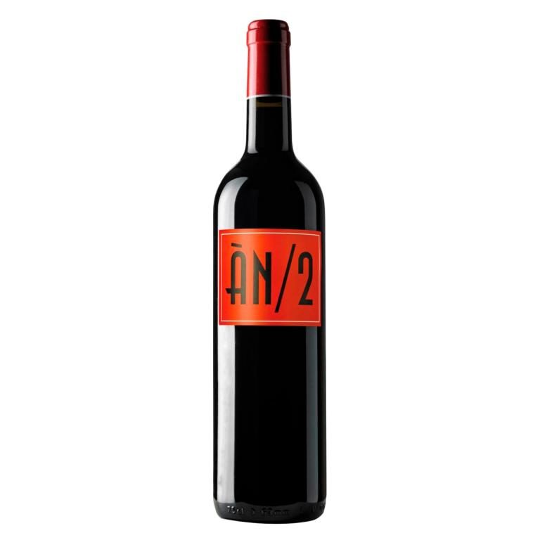
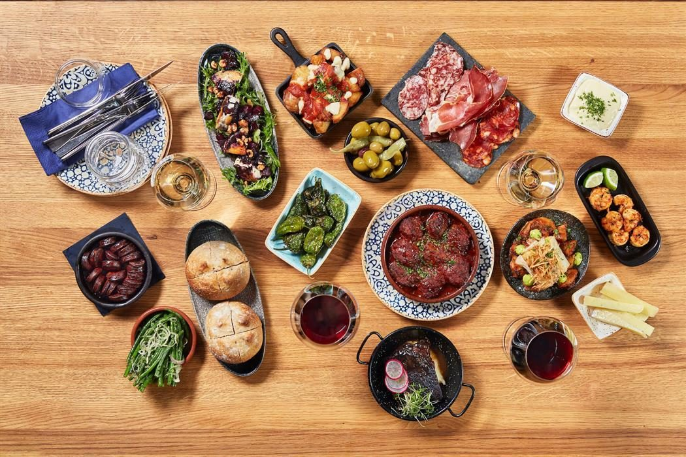
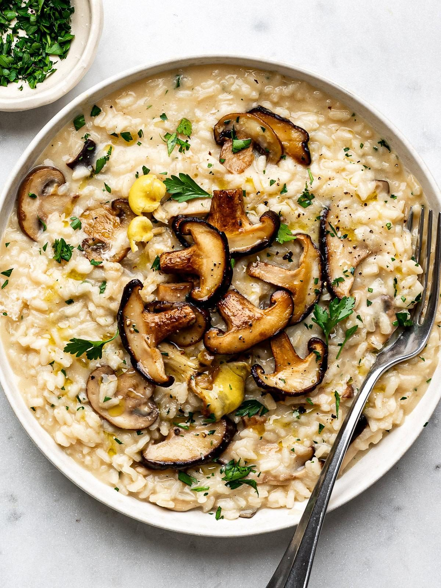
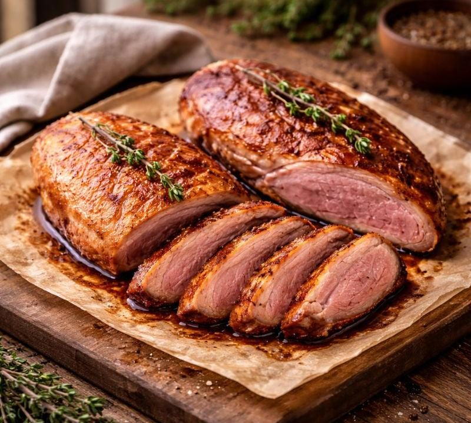
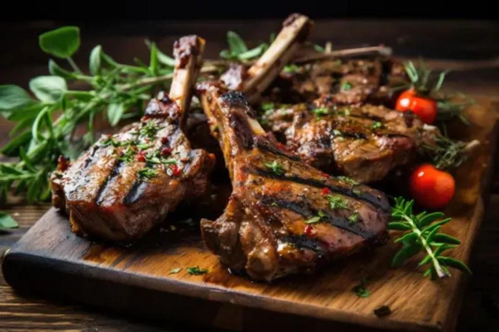
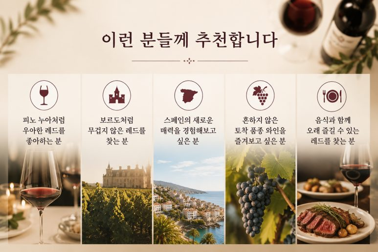

마요르카의 와인 역사를 바꾼 와이너리, 아니마 네그라
1994년 설립된 아니마 네그라(Ànima Negra)는 스페인 발레아레스 제도 마요르카 섬의 와인 역사를 새롭게 쓴 와이너리입니다.


1994년 설립된 아니마 네그라(Ànima Negra)는 스페인 발레아레스 제도 마요르카 섬의 와인 역사를 새롭게 쓴 와이너리입니다.
당시만 해도 대부분의 생산자들은 카베르네 소비뇽이나 메를로 같은 국제 품종을 심고 있었지만, 아니마 네그라는 오히려 사라져가던 칼렛(Callet), 만토 네그로(Manto Negro), 포고네우(Fogoneu) 같은 토착 품종의 가능성을 믿었습니다.
그 결과 지금은 마요르카를 대표하는 와이너리이자, 세계적인 와인 평론가들에게 꾸준히 높은 평가를 받는 생산자로 자리 잡았습니다. 특히 칼렛 품종의 가치를 세계 시장에 알린 대표적인 와이너리로 평가받습니다.
ÀN/2 2022
ÀN/2는 아니마 네그라를 가장 대표하는 와인입니다.
최상급 와인인 AN의 철학을 담으면서도 조금 더 부담 없이 즐길 수 있도록 만든 와인으로, 와이너리의 스타일을 가장 잘 보여주는 병이라고 할 수 있습니다.
품종
칼렛 65%
포고네우 10%
만토 네그로 10%
시라 15%
13개월 동안 프랑스산과 미국산 오크에서 숙성하여 과실의 순수함과 부드러운 스파이스를 아름답게 조화시켰습니다.
테이스팅 노트
잔에 따르면 선명한 루비 컬러가 먼저 시선을 사로잡습니다.
향에서는 잘 익은 체리와 라즈베리, 자두 같은 붉은 과일과 검은 과일 향이 풍성하게 올라오며, 바이올렛과 지중해 허브, 은은한 발사믹 뉘앙스가 더해집니다.
시간이 지나면서 카카오와 토스트, 스파이스가 자연스럽게 피어나 복합적인 매력을 보여줍니다.
입안에서는 실키한 질감이 가장 먼저 느껴집니다.
탄닌은 매우 곱고 부드러우며, 적당한 산미가 와인의 균형을 잡아줍니다.
무겁게 밀어붙이는 스타일이 아니라 우아하게 이어지는 스타일이라 한 잔, 두 잔 마실수록 더욱 매력이 살아나는 와인입니다.
BODY ●●●○○
ACIDITY ●●●●○
DRY ●●○○○
어떤 음식과 잘 어울릴까?




은은한 허브 향과 부드러운 탄닌 덕분에 다양한 음식과 훌륭한 궁합을 보여줍니다.
특히 추천하는 페어링은
양갈비
오리 요리
버섯 리소토
하몽과 치즈
스페인식 타파스
숯불구이
처럼 풍미가 있으면서도 지나치게 무겁지 않은 요리들입니다.
이런 분들께 추천합니다
✔ 피노 누아처럼 우아한 레드를 좋아하는 분
✔ 보르도처럼 무겁지 않은 레드를 찾는 분
✔ 스페인의 새로운 매력을 경험해보고 싶은 분
✔ 흔하지 않은 토착 품종 와인을 즐겨보고 싶은 분
✔ 음식과 함께 오래 즐길 수 있는 레드를 찾는 분

땡큐와인 한마디
많은 스페인 와인이 힘 있고 진한 스타일을 떠올리게 한다면, 아니마 네그라 ÀN/2 2022는 조금 다른 길을 걷습니다.
섬의 바람과 햇살, 그리고 토착 품종이 만들어낸 우아함이 돋보이는 와인입니다. 과실의 생동감과 부드러운 질감, 지중해 허브의 향이 자연스럽게 어우러져 한 잔만으로도 마요르카의 풍경을 떠올리게 합니다.
"스페인 와인은 진하다"라는 고정관념을 바꿔줄 한 병.
새로운 스타일의 스페인 레드를 경험하고 싶다면 자신 있게 추천드리는 와인입니다. 🍷
이 글은 땡큐와인 네이버 블로그에 먼저 올린 글이에요.